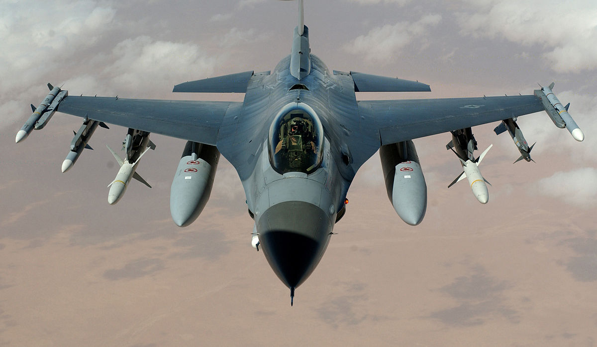

INFORMACJE
Title description, Dec 7, 2017
General Dynamics F-16 Fighting Falcon
Samolot wielozadaniowy zaprojektowany przez amerykańską wytwórnię General Dynamics. Od drugiej połowy lat 70. XX wieku do roku 2012 wyprodukowano 4500 egzemplarzy[3]. Od 1993 roku myśliwiec produkowany jest przez Lockheed Corporation (obecnie Lockheed Martin). F-16 jest użytkowany przez siły powietrzne 26 krajów, w tym Polski (do której pierwsza para trafiła 8 listopada 2006). W Polsce, wbrew dosłownemu tłumaczeniu, przyjęto nazwę Jastrząb, dla odróżnienia od używanego w polskim lotnictwie śmigłowca wielozadaniowego PZL W-3 Sokół. Wśród amerykańskich pilotów znany pod nazwą Viper[4]. Pierwszy w historii samolot myśliwski od początku zaprojektowany z założeniem statycznej niestabilności.
HISTORIA
Title description, Sep 2, 2017
F-16 jest myśliwcem 4. generacji, zaprojektowanym i wprowadzonym do produkcji seryjnej w latach 70. XX wieku w znacznej mierze w wyniku doświadczeń zdobytych w latach 60. Najnowsze wersje samolotu spełniają wymagania myśliwców generacji 4,5. F-16 powstał w rezultacie badań rozpoczętych w ramach programu Lightweight Flighter Program, zapoczątkowanego przez Siły Powietrzne Stanów Zjednoczonych w 1960 roku. W czasie projektowania szczególnie duże znaczenie miała analiza doświadczeń zdobytych w czasie konfliktów zbrojnych, w których uczestniczyły Stany Zjednoczone, w szczególności z wojny w Wietnamie. Pierwotnie miał on być dziennym myśliwcem lekkim, uzupełnieniem cięższego F-15 Eagle’a. Wpływ na kształt projektu miała także tzw. doktryna elastycznego reagowania zakładająca dostosowanie środków walki do zagrożenia, w pierwszej kolejności użycie broni konwencjonalnej, a w następstwie dopiero broni jądrowej. Obydwa etapy wymagały użytkowania szybkich, niewielkich samolotów zdolnych do przenoszenia różnych rodzajów broni. Dlatego też od początku planowane było dostosowanie F-16 do ataków na cele naziemne.